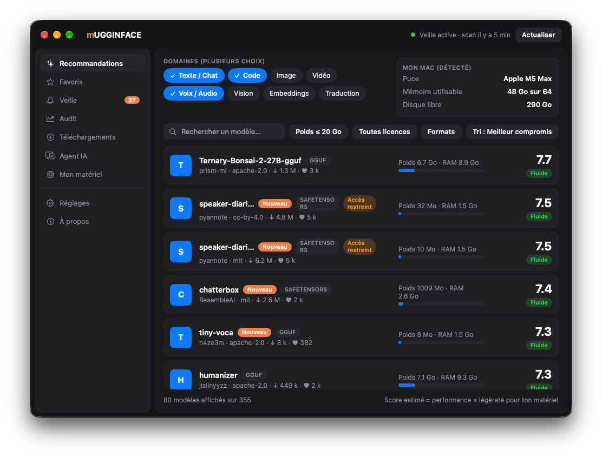
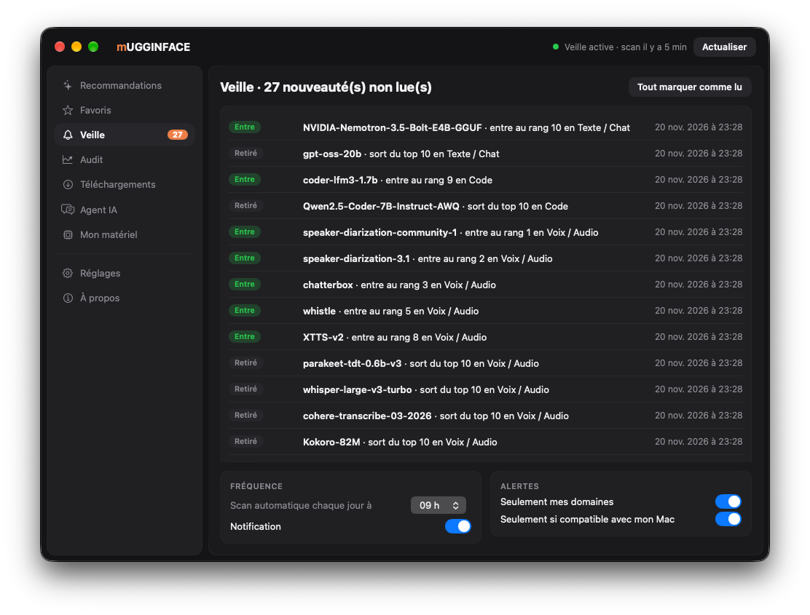
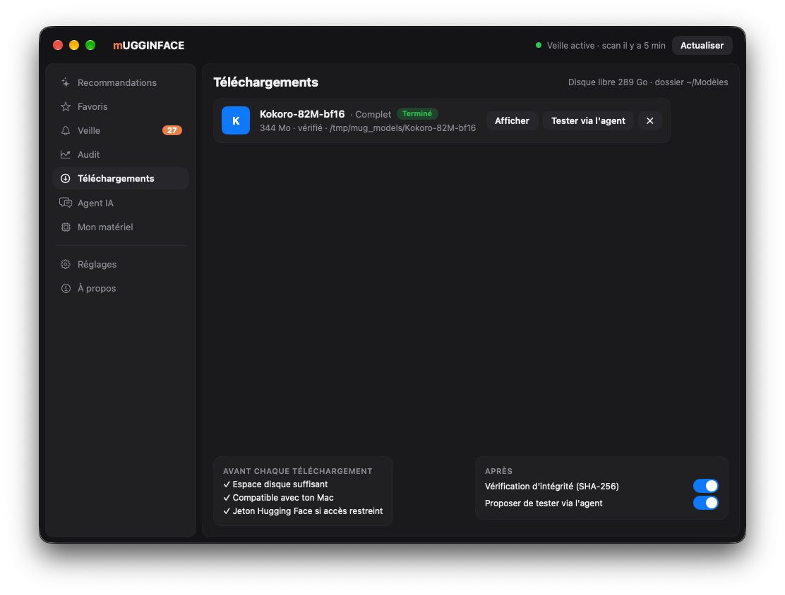
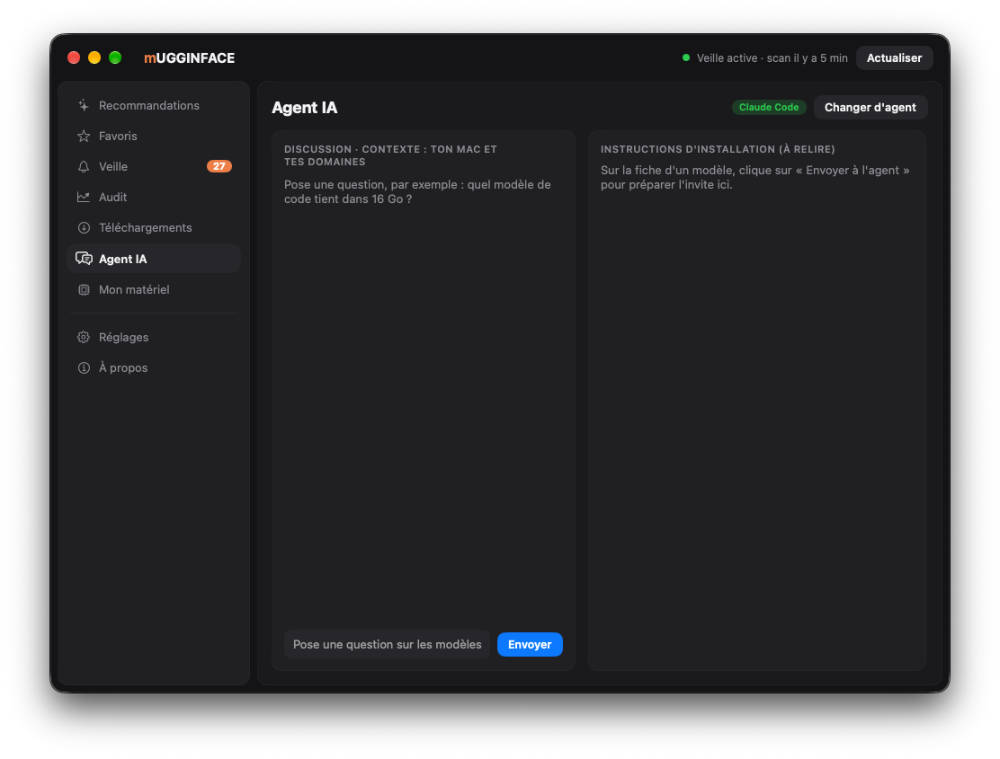
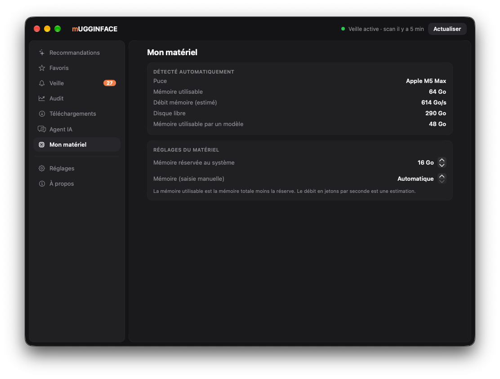
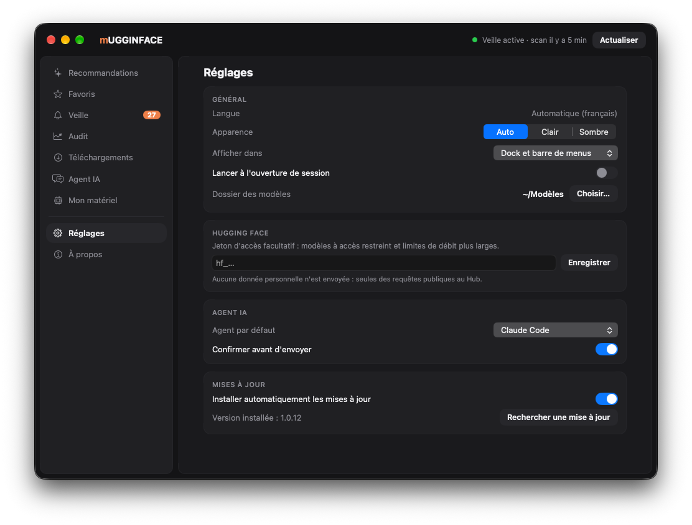
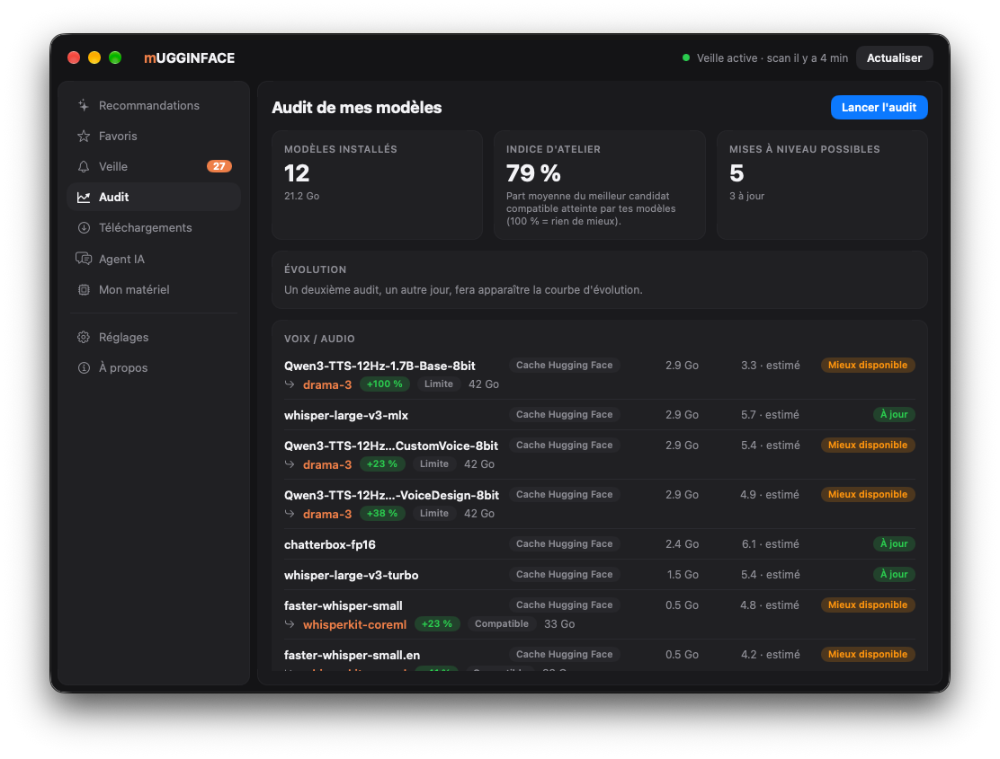
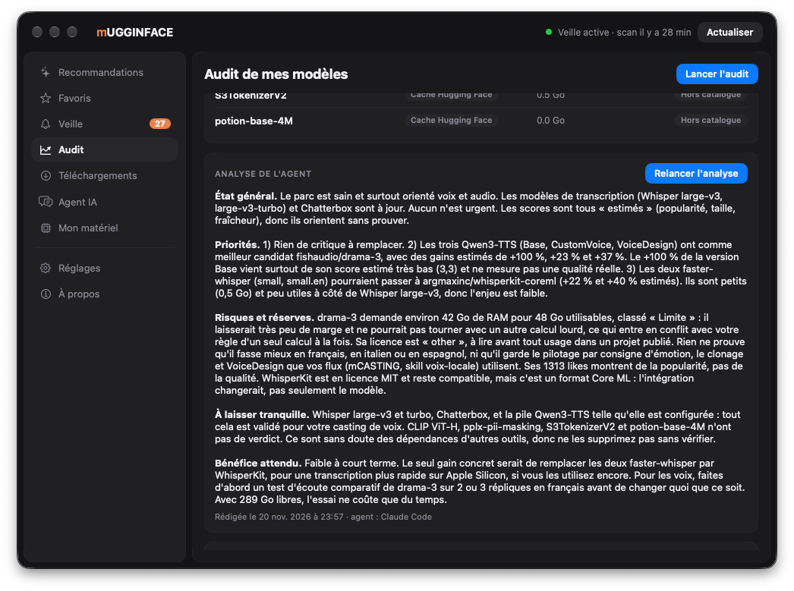
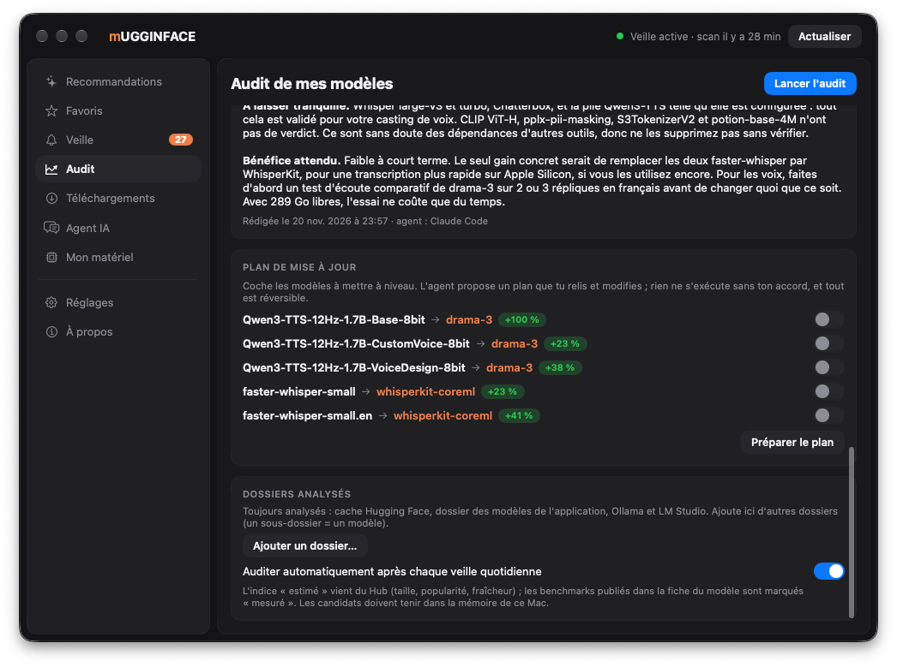

Les captures sont celles de l'application réelle (version de développement, thème sombre). Les maquettes comparatives des 4 designs (Socle, Apple Stephan, Flat Mat, Flat Round) sont dans maquettes/maquettes.html et maquettes/maquettes-flatmat.html ; le design retenu est Flat Mat, clair et sombre.
| Jeton | Clair | Sombre | Usage |
|---|---|---|---|
| bg / win | #F4F1EC | #131316 / #1C1C1F | Fond de fenêtre, zone de contenu |
| card | #FFFFFF | #232327 | Cartes |
| ctl | #EBE6DE | #2C2C31 | Boutons, champs, puces |
| text / text2 | #26231E / #7B756A | #F5F5F7 / #98989F | Texte, texte secondaire |
| acc | #26231E | #0A84FF | Action principale |
| brand | #D9622B | #F08A52 | « m » du nom, badges Nouveau, liens de candidat |
| ok / warn / danger | (clair) · (sombre) | Fluide / À jour, Limite / Mieux disponible, erreur | |
| border | #E3DDD2 | #303035 | Liserés de 0,5 pt |
| Composant | Spécification |
|---|---|
| Carte | Marge interne 14 pt, rayon 12 (continu), liseré 0,5 pt, fond card. Le cadre de largeur se pose avant la carte pour que le fond couvre toute la largeur. |
| Bouton | 12,5 pt semi-gras, marges 12 × 6, rayon 9 ; primaire = fond acc texte onAcc ; secondaire = fond ctl. |
| Étiquette (Tag) | 10,5 pt semi-gras, capsule, marges 8 × 2 ; variantes plain, new (brand), ok, warn, danger (fond à 20 % de la couleur). |
| Puce de filtre (Chip) | Capsule 12,5 pt, coche à gauche quand active, fond acc. |
| Titre de section | 11 pt semi-gras, majuscules, espacement 0,5, texte secondaire. |
| Titre de volet | 18 pt gras, bouton d'action à droite. |
| Interrupteur | 36 × 20, pastille 16, fond acc quand actif. |
| Nom de l'appli | « m » en couleur brand, le reste en texte ; jamais coloré dans un menu déroulant. |
| Entrée | Contenu | Actions principales |
|---|---|---|
| Recommandations | Domaines, Mon Mac, filtres, liste, fiche détaillée | Filtrer, trier, ouvrir une fiche, télécharger, envoyer à l'agent, favori |
| Favoris | Modèles suivis | Ouvrir la fiche |
| Veille (compteur) | Nouveau / Entre / Monte / Retiré, fréquence, alertes | Tout marquer comme lu, ouvrir une fiche |
| Audit | Résumé, évolution, modèles installés par domaine, dossiers analysés | Lancer l'audit, ouvrir le meilleur candidat, ajouter un dossier |
| Téléchargements (compteur) | File, progression, vérifications | Pause, reprendre, afficher, tester via l'agent |
| Agent IA | Discussion + instructions à relire | Envoyer, changer d'agent |
| Mon matériel | Puce, mémoire, disque, débit | Réserve système, mémoire manuelle |
| Réglages, À propos | Préférences, jeton, mises à jour | — |






But : comparer les modèles installés sur ce Mac aux meilleurs candidats du catalogue et suivre l'évolution de l'atelier.

| Colonne | Largeur | Alignement | Contenu |
|---|---|---|---|
| Nom | flexible | gauche, tronqué au milieu | Nom court, semi-gras |
| Source | 140 | gauche | Étiquette : Cache Hugging Face, mUGGINFACE, Ollama, LM Studio, Dossier |
| Taille | 64 | droite | « 2.9 Go » |
| Score | 104 | droite | « 5.4 · estimé » |
| Verdict | 120 | droite | À jour (vert) · Mieux disponible (orange) · Hors catalogue (neutre) |
Sous-ligne si « Mieux disponible » : flèche, nom du candidat (couleur de marque, clic = fiche), gain « +23 % » (vert), adéquation (Fluide / Compatible / Limite), RAM. Ligne grise facultative : « Mesuré · benchmark : valeur contre valeur » ou « n benchmarks publics publiés (mesurés) ».
| État | Affichage |
|---|---|
| Jamais lancé / liste vide | Carte d'explication + date du dernier audit ; l'audit se lance seul à l'ouverture. |
| En cours | Indicateur « scanning » et « Analyse en cours… » à côté du bouton (désactivé). |
| Un seul audit | Texte « Un deuxième audit, un autre jour, fera apparaître la courbe d'évolution. » |
| Aucun candidat meilleur | Étiquette « À jour », pas de sous-ligne. |
| Modèle inconnu | Rangé dans « Autres / hors catalogue », étiquette neutre, pas de score. |


| Dialogue | Texte (résumé) | Boutons |
|---|---|---|
| Exécuter le plan ? | « n élément(s) sont sauvegardés avant. Les anciens modèles sont conservés, les nouveaux installés à côté. Tu pourras tout annuler. » | Exécuter le plan · Annuler |
| Annuler la mise à jour ? | « Les fichiers d'instructions sont restaurés depuis la sauvegarde (la version actuelle est gardée à côté) et les modèles téléchargés par ce plan vont à la corbeille. Les anciens modèles n'ont pas été touchés. » | Annuler cette mise à jour (destructif) · Annuler |
Lecture par usage (voix, texte, image…), comme le reste de l'appli. Résumé en tête, évolution, puis détail.
Une seule table (nom, domaine, source, taille, score, gain). Plus dense, perd le regroupement par usage ; à garder pour une future option d'export.
Indice + courbe + liste des mises à niveau. Plus léger, mais cache les modèles à jour que l'on veut vérifier.